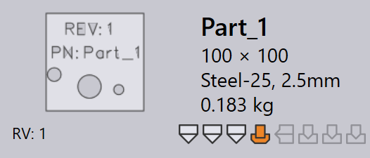

Teile importieren
Stellen Sie vor dem Import von Teilen sicher, dass die Dateiformate mit TruSmartCAM kompatibel sind. Siehe Unterstützte Dateiformate für weitere Details.
| Wenn Material und Dicke nach dem Import nicht dem Teil zugeordnet sind, weisen Sie das Material über das Teile-Panel zu. |
Importmethoden
Es gibt drei Methoden, um Teile in die Teilebibliothek zu importieren:
-
Import über Datei
-
Drag and Drop
-
Überwachungsordner
Import über Datei
Eine 2D- oder 3D-Teiledatei kann mit der Option Import parts… in die Teilebibliothek importiert werden.
-
Klicken Sie auf das open-Symbol in der Befehlsleiste und wählen Sie die Option Import parts….

-
Der Öffnen-Dialog erscheint — wählen Sie eine beliebige CAD-Datei (2D oder 3D).
-
Eine Vorschau der ausgewählten CAD-Datei wird angezeigt.

-
Wählen Sie das gewünschte Teil und klicken Sie auf Öffnen.
-
Das System erstellt automatisch die Werkzeugbelegung für alle verfügbaren Maschinen mit aktualisiertem Werkzeugstatus.
Drag and Drop
-
Ziehen Sie eine Teiledatei direkt in die TruSmartCAM-Teilebibliothek.
Überwachungsordner
Die Überwachungseinstellungen ermöglichen es Ihnen, einen Ordner auf neue Dateien zu überwachen und diese automatisch in die Teilebibliothek zu importieren.
Zur Konfiguration siehe die Seite Überwachungseinstellungen.
|

Importkonfiguration
Use geometry comparison on same CAD revision
Beim Import eines Teils mit derselben CAD-Revision kann TruSmartCAM die Geometrie der CAD-Datei mit dem vorhandenen Teil vergleichen.
-
Um dies zu aktivieren, konfigurieren Sie Revision lookup keys (z. B. REV) unter factory → settings →Import. Aktivieren Sie dann die Option Use geometry comparison on same CAD revision.

| Der Geometrievergleich bei gleicher CAD-Revision funktioniert nur, wenn Revision lookup keys konfiguriert sind. |
-
Importieren Sie nun ein Teil mit einer bestimmten Revision (z. B. Revision 1) in die Teilebibliothek.

-
Dasselbe Teil wird erneut mit demselben Revisionswert importiert.
-
TruSmartCAM vergleicht die Geometrie der neu importierten CAD-Datei mit dem vorhandenen Teil.
-
Wenn ein Geometrieunterschied erkannt wird, zeigt TruSmartCAM eine Abfrage an, ob Sie:
-
Replace — das vorhandene Teil durch die neue Geometrie ersetzen und denselben Revisionswert beibehalten möchten.
-
Skip — den Import überspringen und das vorhandene Teil mit seiner Geometrie beibehalten möchten.

-
Dies ermöglicht es Benutzern, die Teilegeometrie zu aktualisieren, ohne den Revisionswert zu ändern, und gleichzeitig die Kontrolle darüber zu behalten, ob vorhandene Teile ersetzt werden.
Importierte Teile werden automatisch der Bibliothek zur weiteren Verwendung hinzugefügt. Weitere Informationen finden Sie unter Bibliothek.